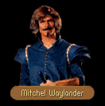

|
|
|  |
[CHAPTER 1]
[CHAPTER 2]
[CHAPTER 3]
[CHAPTER 6] |
|
|
| CHAPTER 1 - FIRST | CHAPTER 1 - SECOND |
|
The way ahead was blocked. From among the men who were guarding the bridge, a man stepped forward to confront them. MITCHEL: I wouldn't advise venturing any closer to Romney. She' s a city besieged. LOCKLEAR: What's happened here? MITCHEL: Guild war, uprising, chaos, the whole of Romney's lost its senses. I'm surprised you haven't heard, but then again, a child scraping his knee in Romney seems more important here than does a coronation in Rillanon. It all started when the Guild of the Riverpullers was pushed out of Silden by a splinter guild, the Guild of the Romney. When the Riverpullers tried to recoup their losses by raising fees in Romney, the Glazer's and Dyer's Guilds refused to take the brunt and we contracted the splinter guild to bring in goods. Unfortunately the Riverpullers asserted they had royal grant of exclusivity to the river and burned two Romney Guild rafts. Three members of the Glazer's Guild were killed in the fire as was the chief reeve of the Dyer's Guild. We've been fighting for access to Romney ever since. LOCKLEAR: Who seems to have the upper hand at the moment? MITCHEL: Neither side. It's a stalemate with the labor guilds occupying the North bank of the Ursine Ford and the crafters on the South. I was trapped on this side before the Riverpullers ordered the blockade. Oh, and by the way, I'm Mitchel Waylander, Local Chief Reeve of the Glazer's Guild. LOCKLEAR: Nice to meet you. What do you think it's going to take to bring this fight to an end? MITCHEL: We've sat down to negotiate with them, but the Riverpullers' leader is a hard old crat and frankly, I don't think he wants to end it. They've laid claim to all the goods that weren't shipped as duty for breech of agreement. The local solicitor informed him that it went outside of Kingdom custom, but the Riverpullers asserted it was also part of their royal charter. We still don't even know if such a document exists... LOCKLEAR: Is there any other way into Romney? MITCHEL: There was a time when you could have hired someone to boat you in, but there's not a soul on the river who'd be fool enough to try to run the river blockade. River's nearly deserted because of it. Only people who are still around are the one's who can talk a blue streak. LOCKLEAR: Really? And why is that? MITCHEL: Unless you can haggle with the best of them, you'll not get even a fair price on any of the goods here on the river. Might as well try to buy King Lyam's crown as a packet of rations around here. LOCKLEAR: Perhaps you could give us a few of the finer points of haggling since you're in the trade... MITCHEL: Perhaps I could, but...I really have to get to some of my associates in Sloop. I stand to lose quite a bit of money the longer I wait. LOCKLEAR: We might be prepared to renumerate you for lost time if you could help. MITCHEL: Really? Well, I suppose I might be persuaded to give you a hand for oh, fifty sovereigns. That's my proposal. What do you say?
|
ONLY IF FIRST = NO The way ahead was blocked. From among the men who were guarding the bridge, a man stepped forward to confront them. MITCHEL: You'll pardon me if I seem a little startled, but I half expected you to be dead men. I'm glad to see the Riverpullers haven't sent you to your graves. LOCKLEAR: We held our own. Did you attend to your affairs in Sloop? MITCHEL: The Glazers there said they would send in a few men for support but they weren't sure how many or how soon. I'll have to take their word for it and hope their help doesn't become necessary. Now, how about that lesson on haggling? I could still use the funding. Interested? SEE OPTIONS BELOW |
| YES (enough) | YES (not enough) | NO |
|
LOCKLEAR:
I say you're mad as old King Rodric, but I can't blame you for wanting to make an honest
sovereign. You have your deal. MITCHEL: First thing, don't cross your arms when you talk. I know as a noble you have been taught to look as imposing as possible, but that won't wash when you're trying to buy a bolt of cloth. Look vulnerable or at the very least unimposing. Once you're human, it's a lot easier to believe that you're in need of a break. LOCKLEAR: Sounds reasonable. What else? MITCHEL: Look a man in the eye when he's talking to you. It makes him believe that you share interests with him and will usually lull him into a charitable mood. He's much more malleable when he believes he's the authority on the matter. LOCKLEAR: But what if he isn't? MITCHEL: Lesson three, never interrupt the man whom you're trying to buy from. Lesson four, right and wrong lose their meaning in a bargaining atmosphere. It doesn't really matter if the sword that the shopkeeper presents to you isn't the finest blade in the land. You are either interested in the blade at the price he quotes or you aren't. Insulting the integrity of his good will only earn you his scorn. Disinterest will more often lead you to better bargains... LOCKLEAR: Hmmm. A few things to think about and I daresay we may find uses for your wisdom elsewhere... MITCHEL: My pleasure. I'd love to stay and chat some more, but I have finances to attend to. Farewell. LOCKLEAR: Thank you, Mitchel. Farewell.
|
LOCKLEAR:
As usual, I have allowed my tongue to engage in a bargain that my pouch could not fulfill. I
haven't the money to reimburse you with. MITCHEL: I'm sorry then, I haven't the money to dally here. I'm sorry Seigneur, but perhaps I could see you again once I have concluded my business elsewhere. Farewell. LOCKLEAR: Farewell, Mitchel.
|
FIRST TIME: LOCKLEAR: I think we'll pass for the moment. I'm always interested in a bargain, but not at the cost you're asking. MITCHEL: Suit yourself, but beware. Most of the guilds in this region take this no less lightly than if the dog soldiers of Greater Kesh were poling up the Romney. This is war to most of us. LOCKLEAR: They aren't far from wrong. Romney is a Kingdom village and as such, it is a free town. Any faction that has determined the city is to be closed against it's will deserves to be warred with, Kingdom writ or no. I am sure your Duke has something to say about it. MITCHEL: He's none too pleased, that's for certain, but there's not much he can do about the matter until he can get the head of the Ironmonger's Guild to come to negotiations. That's neither here nor there. I've got a bridge to watch and later, business to attend to in Sloop. I bid you gentlemen farewell. LOCKLEAR: Good day to you. We shall speak again. SECOND TIME: LOCKLEAR: Sorry, but as we told you before, the price is too high for us. MITCHEL: In the end, you'll end up paying the more for it, but that is your choice. Good day to you. LOCKLEAR: To you as well.
|

| CHAPTER 2 - FIRST (no Seal) | CHAPTER 2 - SECOND (no Seal) |
|
The way ahead was blocked. From among the men who were guarding the bridge, a man stepped forward to confront them. MITCHEL: Do you have a Glazer's Guild Seal? I'll have to see one before I can let you across the bridge. We're trying to prevent a full scale guild war here and we have to make sure that no unfavorables show up. It's just a formality until we can get things settled down here again. JAMES: Guild war? What do you mean? MITCHEL: There was an uprising here. Lasted for several months. The Riverpuller's Guild took charge of the other labor guilds and surrounded Romney. The crafts guilds tried to fight their way out and it seemed a losing battle until the King's men came up from Bas-Tyra. They managed to pacify the Riverpullers' leader. The Duke of Romney's kept it from getting worse, but I can't guarantee how much longer he'll be able. It will probably be a while though before we open up the roads to the general populace. JAMES: Can the townspeople come and go at will? MITCHEL: We've restricted visitors from the outside, not imprisoned the citizens. Any townsperson can come and go at their leisure. JAMES: I assume the same may be said of your guests? May the men of the King's company come out and play? We have business with them. MITCHEL: I would be happy to help you but I'm not entirely certain I would know how to contact them. They are hard to get into one place and I'm not sure that I've met their leader. They are a rather untrusting pack of men. JAMES: They would have to be. When you're tracking assassins, you have to be craftier and a little less moral than your prey... So, where would I go to get one of these seals? MITCHEL: It's not that easy. There's a group near Silden that have been petitioning for membership for some time now. But they're an unruly bunch and can't find anyone to sponsor them. JAMES: But if I present a seal you will step aside with no questions asked? MITCHEL: Well, not with no questions asked, but it would show that someone from the guild was vouching for you. JAMES: Enough, reeve. We will come back. In the interim, please deliver a message to the King's men from Bas-Tyra that three men will be here soon to visit with them concerning a nocturnal bird that kills at night. They will understand what the message means.
|
The way ahead was blocked. From among the men who were guarding the bridge, a man stepped forward to confront them. MITCHEL: Halt. I can't let you across without a Glazer's... JAMES: ...Guild Seal, yes, you've told us before. The business I have with the King's men is very important and I can't tolerate further impedance by a group of self-important cattle! Let us pass! MITCHEL: Present the seal and the town is yours. Until then, sleep in the mud, Seigneur. It suits your manners... JAMES: Right now, my "manners" are the only thing separating your skull from my boot. We'll be back.
|
| CHAPTER 2 - James has Seal |
|
The way ahead was blocked. From among the men who were guarding the bridge, a man stepped forward to confront them. MITCHEL: The city of Romney is sealed at the moment to all but the citizens and those who are members of the Glazer's Guild. Do you have one of our seals? JAMES: Yes. Why is a guild in charge of the city? MITCHEL: The constabulary were all killed in the uprising by the Riverpullers Guild and no one else in any authority was left alive to administrate. When I was approached to take command, I decided that I would use my men in the Guild to help maintain order until such a time the Duke was able to arrive from his estates. JAMES: Makes some sort of sense. Where can we find the King's men from Bas-Tyra? MITCHEL: They'll be holding up in the Black Sheep Tavern for a celebration of some kind. I believe I heard one of them say they've found something they were looking for. I'm not sure what it's all about. JAMES: I think that may mean good news for us as well. Good night, reeve. We're on into Romney...
|

| CHAPTER 3 - FIRST (clue) | CHAPTER 3 - FIRST (no clue) |
|
James knocked cautiously on the door. A few tense moments later the wood began to creak and the door swung open. From the darkened room a figure emerged and James gripped his sword tighter, prepared for any eventuality. Though Mitchel Waylander wasn't one of his favorite people, he was a bit relieved to see his familiar face...and Mitchel seemed a bit relieved to see them. MITCHEL: I don't know who sent you, but I'm very thankful for your help. JAMES: Let's just say that anyone on the business end of a Nighthawk sword is of interest to me these days. It's not like them to send multiple assassins unless the target is considered a danger to the guild. MITCHEL: But I'm a merchant! I don't know anything about the Guild of Assassins! JAMES: You wouldn't necessarily have to know anything about them. You might have witnessed something they preferred unseen, perhaps they think you've wronged them in some way. Where were you the night the King's men from Bas-Tyra regiment were assassinated? MITCHEL: What?! I hadn't heard... Gods, they were good men! If it hadn't been for them, we never would have broken the Riverpullers' siege at Romney. How did they die? JAMES: Nighthawks set up on them in the Black Sheep Tavern. Killed every last man. The only thing I found strange was the fact there were few signs of resistance. I was told by the boy who tends the bar a few casks of Keshian Ale were delivered the night before, but the Bas-Tyra men are very disciplined men. Does it seem reasonable to you a detachment of men trailing the Nighthawks would get drunk in the town where they suspect the Guild of Assassins have their headquarters? MITCHEL: It does sound a bit odd. JAMES: It sounded odd to me as well, so I decided the ale had been tainted in some way. I thought if I found the man who sent the ale, I might be on the trail of the Nighthawks. Then I visited the tavern here in town and I discovered something very disturbing. The arrangements for the ale delivery were made here and the keeper was instructed to add a significant amount of tarweed to the mixture, a mixture that while not poisonous, induces the drinker to become excessively thirsty, ensuring that he will continue to drink until quite drunk. But that was not the shocking information. You see, it seems the local chief reeve of a prestigious guild arranged for the delivery of the Ale...Mitchel Waylander! MITCHEL: I never made that order! I would have been in Romney when the arrangement was made. I couldn't have made that order! JAMES: I realize that as well. The Nighthawks have gone to extreme trouble to implicate you and that tells me they want revenge for something. The men that were sent here to kill you would undoubtedly have planted the final evidence on your corpse. So, what could you have done to them? MITCHEL: Truly, I don't know... JAMES: Do you know anything about a silver spider or a brass spyglass? MITCHEL: A brass spyglass? Oh dear gods! But that man couldn't have been a Nighthawk... He was so, so regal looking... JAMES: What did you do to this man? Is the spyglass involved? MITCHEL: There is a place north of Romney known as Prank's Stone. When people approach it, they often discover that items on their person disappear. A business partner and I discovered where the disappeared items go to and we sell the items we find. Any way, one night I was drinking in the town of the same name and I saw this man who had a very marvelous brass spyglass. My guild was having difficulties at the time and I was low on cash so I conspired to achieve the spyglass for my own. I had noticed the attention he was paying to a rather fetching barmaid and I arranged that a note was sent to his table telling him to meet her near the Prank's Stone. The spyglass became ours... JAMES: If the man you snatched the spyglass from learned what happened, I could see how he would want revenge. Where did you sell it? MITCHEL: I don't sell the items. My partner does and we split the profits. I don't know anything about him other than the fact that he is a native of Silden. We decided early on that we would share only our booty so that if one of us was caught, the other would be safe. JAMES: Then it seems we have business in Silden. Lay low. It may be the only thing that keeps you alive, Mitchel. The Nighthawks are not men that should be angered.
|
James knocked cautiously on the door. A few tense moments later the wood began to creak and the door swung open. From the darkened room a figure emerged and James gripped his sword tighter, prepared for any eventuality. Though Mitchel Waylander wasn't one of his favorite people, he was a bit relieved to see his familiar face...and Mitchel seemed a bit relieved to see them. MITCHEL: I don't know who sent you, but I'm very thankful for your help! JAMES: Let's just say that anyone on the business end of a Nighthawk sword is of interest to me these days. It's not like them to send multiple assassins unless the target is considered a danger to the guild. MITCHEL: But I'm a merchant! I don't know anything about the Guild of Assassins! JAMES: You wouldn't necessarily have to know anything about them. You might have witnessed something they preferred unseen, perhaps they think you've wronged them in some way. Where were you the night the King's men from Bas-Tyra regiment were assassinated? MITCHEL: What?! I hadn't heard... Gods, they were good men! If it hadn't been for them, we never would have broken the Riverpullers' siege at Romney. How did they die? JAMES: Nighthawks set upon them in the Black Sheep Tavern. Killed every last man. The only thing I found strange was the fact there were few signs of resistance. I was told by the boy who tends the bar that a few casks of Keshian Ale were delivered the night before, but the Bas-Tyra men are very disciplined men. I doubt they would get drunk while trailing Nighthawks. I suspect that the ale was tainted somehow to make certain the assassins had as little difficulty as possible. We also found a silver spider and a brass spyglass on the bodies. MITCHEL: A brass spyglass? I agree, that's very strange, very strange indeed. I wonder what they were doing with it? The silver spider though, that's definitely a sign. That's an assassin's tool. JAMES: Really? How is it used? MITCHEL: I'm clueless. I've just heard that Nighthawks carry them sometimes. Maybe they dropped it on the bodies when they were fighting... JAMES: It's a lead at the least. Thank you, Mitchel. Where will you be if we need you again? MITCHEL: I have a few debts to pay off for the Glazer's Guild in Sloop, so if you should need me I will be here. Goodbye.
|
| CHAPTER 3 - SUBSEQUENT | CHAPTER 3 - SECOND (clue) |
|
James motioned to the figure across the room. The man walked over to join them. He stood before them, eyebrows arched inquisitively. MITCHEL: Have you found anything new out about the murder? JAMES: Not yet. We were hoping you might have some extra insights into the matter. MITCHEL: You've come to the wrong man. I'm still getting over the shakes after those Nighthawks came after me. JAMES: I'd be an unreasonable man not to grant you that. We will leave you to recover your wits then. Good day, Mitchel.
|
James motioned to the figure across the room. The man walked over to join them. He stood before them, eyebrows arched inquisitively. MITCHEL: Have you found out who killed the King's men yet? JAMES: We're on their trail and getting closer. I wanted to come and see you again because I visited the tavern here in town and I discovered something very disturbing. The arrangements for the ale delivery were made here and the keeper was instructed to add a significant amount of tarweed to the mixture, a mixture that while not poisonous, induces the drinker to become excessively thirsty, ensuring that he will continue to drink until quite drunk. But that was not the shocking information. You see, it seems the local chief reeve of a prestigious guild arranged for the delivery of the Ale...Mitchel Waylander! MITCHEL: I never made that order! I would have been in Romney when the arrangement was made. I couldn't have made that order! JAMES: I realize that as well. The Nighthawks have gone to extreme trouble to implicate you and that tells me they want revenge for something. The men that were sent here to kill you would undoubtedly have planted the final evidence on your corpse. So, what could you have done to them? MITCHEL: Truly, I don't know... JAMES: Do you know anything about a silver spider or a brass spyglass? MITCHEL: A brass spyglass? Oh dear gods! But that man couldn't have been a Nighthawk... He was so, so regal looking... JAMES: What did you do to this man? Is the spyglass involved? MITCHEL: There is a place north of Romney known as Prank's Stone. When people approach it, they often discover that items on their person disappear. A business partner and I discovered where the disappeared items go to and we sell the items we find. Anyway, one night I was drinking in the town of the same name and I saw this man who had a very marvelous brass spyglass. My guild was having difficulties at the time and I was low on cash so I conspired to achieve the spyglass for my own. I had noticed the attention he was paying to a rather fetching barmaid and I arranged that a note was sent to his table telling him to meet her near the Prank's Stone. The spyglass became ours. JAMES: If the man you snatched the spyglass from learned what happened, I could see how he would want revenge. Where did you sell it? MITCHEL: I don't sell the items. My partner does and we split the profits. I don't know anything about him other than the fact that he is a native of Silden. We decided early on that we would share only our booty so that if one of us was caught, the other would be safe. JAMES: Then it seems we have business in Silden. Lay low. It may be the only thing that keeps you alive, Mitchel. The Nighthawks are not men that should be angered.
|

| CHAPTER 6 - IF ABBOT | CHAPTER 6 - ELSE |
|
Owyn motioned to the figure across the room. The man walked over to join them. He stood before them, eyebrows arched inquisitively. MITCHEL: I don't have time to chat right now. I've got Glazer's Guild business I need to attend to and far too many pots to glaze before the sun goes down this evening. OWYN: We've come from Malac's Cross. Abbot Graves sent us. MITCHEL: What about? OWYN: The townspeople in Malac's Cross are calling for his head. He said that we should come and ask you for help. MITCHEL: He's gambling quite a bit that I would help him, of all people. If I hadn't accepted his connections to the Crawler and the Guild of the Romney, the guild war might never have started...blast him. Deep down I know he was trying to help us, but the trouble he caused... Do you think they will truly attempt to kill him? OWYN: I can't be convinced, but the Abbot seemed convinced. MITCHEL: He's wise enough to know... All right, then. I will give you a note to give to the Abbot. There is a Glazer's Guild office in Malac's Cross and they should be able to help him out, but I'm calling in the last of my favors. I'll probably lose the guild, but this is for a friend... OWYN: I'm sure he will appreciate it. Thank you, Mitchel.
|
Owyn motioned to the figure across the room. The man walked over to join them. He stood before them, eyebrows arched inquisitively. MITCHEL: I really don't have time to talk right now. I've got Glazer's Guild business that I need to attend to and far too many pots to glaze before the sun goes down this evening. Goodbye. OWYN: Good day to you then.
|